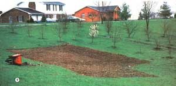
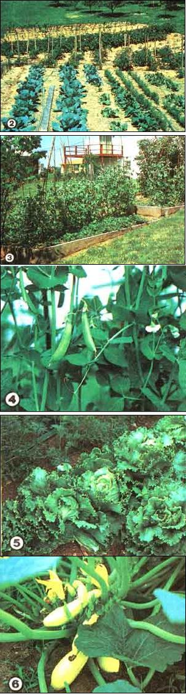

Even if you don't have a rural homestead, you can produce a bumper crop of vegetables by . . .
By the spring of 1981, more Americans were tending gardens than during any other peacetime period in our recent history. A 1983 Gallup survey reveals that 42% of American households - over 35 million families - raise some or all of their own vegetables. The reasons for such a pervasive trend? Well, the rising cost of living and a growing conservation ethic seem to have combined to make gardening a more attractive - and often downright necessary- family activity. Folks everywhere who want to take a hand in producing their own food for less expense are plowing up their backyards and sowing seeds for everything from artichokes to zucchini.
And yet, thousands of other families did not put in gardens last year . . . and possibly won't again this year. The reasons most often cited by nongardeners for their inaction are insufficient knowledge and a lack of available land. The average suburban or inner-city home has no room for a vegetable plot, they say. Furthermore, such individuals often claim that it's terribly difficult for beginners to acquire the know-how that can transform them from greenhorns into green thumbs. These ideas, of course, are just plain wrong: Most city and housing development lots do have at least a small corner that could conceivably be turned into a productive garden, even if the terrain is sloping, hilly, or a bit rocky. Moreover, urban dwellers don't have to worry about spoiling the aesthetic value of what little land they have, since a well-tended vegetable garden - with its neat rows of mulched plants and fragrant herb - scan be quite an attractive spot.
The problem of lack of knowledge is easily remedied, too. Fledgling horticulturists can check their local libraries and bookstores for references on the subject. Most communities also have quite a few veteran gardeners in residence who are almost always willing to assist beginning growers. In addition, all counties - urban and rural - employ agricultural extension agents who have a large supply of helpful (and often free) literature on recommended crop varieties, methods of pest control, and tips for canning and freezing. Most extension agents will also help gardeners make chemical test analyses and set up fertilization schedules.
What follows in this article, then, is a collection of hints and suggestions geared to the first-time gardener who may be just a bit bewildered by the technical advice often found in gardening manuals. Furthermore, my "primer" is designed to cover the problems an urban vegetable grower would be likely to face (but most of the information is general enough to apply to just about any garden plot).
THE DRAWING BOARD
Planning the urban garden is much like designing any garden, except that the inherent space limitations force you to pay closer attention to the characteristics of the land available. Very early in the year (or, if possible, during the previous autumn) you should carefully survey your whole lot to determine the optimal garden space, keeping in mind that young vegetables need lots of sun and good drainage. I've found that the minimum space needed to produce all the vegetables a family of four will need for one year is about 60' X 60' . . . but your plot need not be that large, nor should it necessarily be a symmetrical square or rectangle. Instead, fit the garden to your land, taking into consideration the directions of slopes and locations of low spots (and don't worry if the area turns out to be oval, triangular, or even shotgun- or skilletshaped). Once you've chosen the location, make a rough sketch of the area for future reference . . . including angles and degrees of slopes, position of sunrise and sunset, soil depth, and drainage patterns.
During the survey, keep in mind that, to accommodate the peculiarities of the topography, your garden - rather than being one compact unit - may have to be divided into several separate areas. And don't forget to make use of your "marginal" land: Lot lines, old flower gardens, and odd-shaped corners can be used for raising herbs or leafy vegetables such as lettuce and chard. In addition, feel free to include patios or back porches in your overall plan, since such plants as cherry and plum tomatoes and small herbs (basil, chives, parsley) grow beautifully in long window boxes, hanging baskets, and wooden barrels.
Armed with your sketches and "field notes", sit down and lay out the garden (or gardens) on paper, first indicating the direction of each row. Keep in mind, too, that those lines must run at right angles to the slope of the land in order to hold erosion to a minimum. If your acreage drops away in more than one direction, then it may be necessary to lay out some rows at angles to the others. (Eventually, you can further deter erosion by forming - at planting time - a series of ridges on which to sow the crops.) If the land is exceptionally steep, you may even find it helpful to dig a furrow around the entire planting area to divert runoff water. Also, it's often a good idea to line the perimeter of the garden with rows of rocks or tiles to intercept and slow runoff before it reaches the vegetable beds.
Once you've settled on the angle and layout of your garden's rows, you can concentrate on determining exactly what is to be planted where. At this stage of the game, it's very useful to have seed catalogs on hand, since practically all of those booklets provide details on plant spacing and growing periods (from planting to harvest). Using that information, you can plan second - and, in some cases, even third - plantings in order to use the space most efficiently. After you've diagramed the major crops you intend to grow, you may find that you have extra space left in which to raise "luxury" edibles. Fill those leftover spots with strawberries, raspberries, asparagus, rhubarb, small grape arbors, or` even dwarf fruit trees. (Fruit bearers also make excellent ornamentals when planted around a dwelling.)
STOCKING UP ON SEEDS
As a beginner, you can probably get by with borrowing or buying inexpensive garden tools . . . but when it comes to seeds, the wise gardener purchases only the best available. You should buy from a reputable seed catalog house and order as early as possible in the season. Some popular varieties - such as Sugar Snap peas and bush cucumbers - have been known to sell out quite early, so it's a good idea to get your order in during the winter months, if possible. Of course, many other crops have to be set out, as started plants, after the last frost because of the longer time they require to reach maturity . . . so right before planting time you'll need to purchase seedlings of those vegetables (which include onions, cauliflower, cabbages, eggplants, tomatoes, lettuce, and peppers) at a local nursery. Or, as an alternative to buying "starters", you might want to sprout the seedlings in small indoor pots, on windowsills, or in a cold frame.
If you choose the do-it-yourself route, you can build a simple cold frame from four lengths of 2 X 8 scrap lumber, a double layer of clear plastic sheeting, and enough rich soil to fill the container two-thirds full. Set up the mini-hothouse in a sheltered but sunny spot near the house and sow your seeds early (in my part of Kentucky, that means February). Once the bed is watered, you can staple the plastic tightly over the frame and leave it alone. The seeds should then germinate rather quickly, allowing you to transfer the small plants to the garden after frost danger has passed. (However, you may find that some of your vegetables mature faster than you expected, and - in such cases - these can be harvested and eaten right from the cold frame!) Among others, such cool-weather species as lettuce and radishes do particularly well when sown early in a cold frame . . . and the lettuce can be moved to the garden at the same time that other seeds are planted.
As for which varieties of vegetables to raise, that's pretty much up to your own palate and to the local growing conditions. Be careful to plant only those cultivars that are well suited to the climate (you can determine your locale's "favorite sons" by consulting with the county extension agent or by studying seed catalog descriptions). (EDITOR'S NOTE: Turn to page 78 for some gardener-tested seed recommendations!)
PREPARING THE PLOT
The initial step in readying the beds for cultivation is to turn the earth over thoroughly. If the ground in your garden space has never been broken, you might - if your space is accessible to a large machine - first have to hire someone with a plow to come in and work on it . . . especially if the soil has a considerable clay content. After that preliminary ground-breaking, you'll need to go over the plot several times with a rotary tiller to reduce all chunks and clods to finely pulverized particles, down to a depth of about one foot. (On the last pass of the tiller, I usually work in 25 to 50 pounds of 10-10-10 fertilizer, distributed equally over the surface of the garden . . . then I just rest awhile and let the area remain in this "raw" state while it absorbs the nutritive material I've introduced.) Near the end of March, the garden should be ready for a final tilling . . . after which you can outline the individual rows with stakes and string.
WHAT AND WHEN
It'll be quite awhile before it's time to plant some species . . . but Sugar Snap peas, for example, can - in many regions - be sown immediately after tilling, in late March. (It's often possible to plant two successive crops of the delicious vegetable: one in March and one in August.) Lay in some six-foot stakes and install them as soon as the peas - planted two inches apart, with four inches between rows - reach a few inches in height, then tie string or cords between the stakes to provide a "footing" for the vines as they begin to climb upward. To conserve space, I often sow my sugar peas directly in the strawberry beds, where the leguminous crop can add extra nitrogen to the soil (and thus improve my berry yield).
Other cool-weather crops include lettuce (bibb, leaf, and head), radishes, and spinach . . . and these should be planted by mid-March in the middle climatic zones of North America, or in early April farther north. However, if a late frost is predicted, do cover the young seedlings with newspaper "hats". White potatoes can also be planted in March (as opposed to sweet potatoes, which can't tolerate cold weather) by the following method: Cut a seed potato into chunks with an "eye" in each one, and sow the pieces about three inches deep. Many people plant potatoes in hills to protect the developing tubers . . . but I find it easier to simply rake soil up around the plants as they mature, thus creating a protective ridge surrounded by deep furrows. (In fact, it's a good idea to follow this procedure in every vegetable row as a precaution against water runoff.)
Most of the later single-seed plantings (such as corn, squash, and melons) should be made two per hole when all danger of frost is past and then thinned out when it becomes obvious which plant is the strongest. Vining plants (squash and melons, for example) like to be planted in small hills of soil, because they require exceptionally good drainage. Sugar pumpkins - which are a good choice, since they grow less rampantly than most varieties - can be sown among the corn rows (plant the pumpkins about six feet apart).
And here's an old-time Kentucky garden trick that all but insures quick germination for beets and carrots. First, dig a shallow furrow along the length of the row you've staked out, and plant the seeds thinly. Then cover the beds with a quarter-inch layer of wood ash, water lightly, and lay heavy boards over the whole thing. (The soft ashes encourage the tender seedlings to emerge faster and also provide potash for good root development . . . and the boards keep the ash mulch intact while protecting the seeds from weeds and trampling feet). Keep a close watch on the rows, and as soon as the seedlings poke their heads above the ashes, remove the boards and begin to water the bed regularly.
For a bumper harvest of sweet corn, sow two (or more) crops of the vegetable. First, plant a couple of rows . . . wait two weeks . . . and then plant two or three more. This practice, which spreads out the harvest more evenly, can continue with third and fourth plantings in warm, southerly climates. Furthermore, in many zones second plantings can be planned for almost every crop. . . allowing you to balance out the work and the enjoyment you derive from your edibles. Beans, whether bush or pole varieties, should be replanted in late summer. Cauliflower and broccoli can be started indoors in peat pots during July, to be set out for a fall harvest. Turnips, of course, can be left in the ground far beyond the first autumn frost, so you might want to sow a late crop in any row that's left vacant after the initial harvest.
As soon as everything's in, it's a good idea to give each newly installed plant (or germinated seed) a dose of liquid fertilizer such as manure tea . . . which makes for strong, disease-resistant, and productive plants. Once the cultivars are well established, I provide side dressings of a standard 10-10-10 fertilizer for each one. [EDITOR'S NOTE: Good organic fertilizers-such as compost or well-aged manure-will also do the job well.] Finally, be sure to keep records of where each crop is grown, in order to rotate them next year, planting a different species in each bed. This will prevent severe depletion of soil nutrients and, in addition, discourage any pests or diseases that might overwinter in your soil. (For example, planting legumes in a row where corn or potatoes grew the previous year will rapidly replenish the soil's nitrogen content.)
Once you have all your vegetables in, consider adding an herbal complement to your garden. Many Americans have never tasted the tangy, better-than-dried flavor of garden-fresh seasonings . . . and such folks are missing a real treat!' Herbs are also easy to cultivate, requiring little space and care to thrive. For example, dill (a must for pickling vegetables and flavoring fish) can be sown along the rough edges of a garden, while lavender (a fragrant addition to any backyard) will do well in flower gardens or along the ragged borders of sidewalks and driveways. Parsley, too, is ideal for placement in odd sections of the garden or yard, as are basil, chives, and thyme (all of which will also grow quite happily in mediumsized clay pots).
If the gardening program I've described here - planning, plowing, planting, and protecting - sounds like a lot of work . . . believe me, it is! But working the soil is also a highly fulfilling kind of labor. To me, there's nothing more beautiful than a carefully tended garden . . . particularly when I know that that beauty is also functional, of fering a bountiful harvest of luscious vegetables! And, as I said before, even if you live in the city or on a tiny suburban lot, you can grow a backyard (or patio or balcony) full of fresh, pure edibles . . . and experience the satisfaction of producing your own food at an affordable cost.
EDITOR'S NOTE: For a look at one of the most disturbing problems faced by urban gardeners and what to do about it, see "Children, Gardens . . . and Lead" on page 38 of MOTHER NO. 70. Turn to page 132 for information on back issues.
|
 [1] Almost any urban (or suburban) lot has some space that can be worked into a fine garden, even on rock-ridden or sloping land. [2] As the garden begins to mature, regular fertilizing, weeding, and watering insure a beautiful addition to the landscape. [3] Old flowerbeds are excellent places for growing table delicacies like ... [4] Sugar Snap peas. Attractive as any row of roses: [5] lettuce and [6] squash. |
 |
|